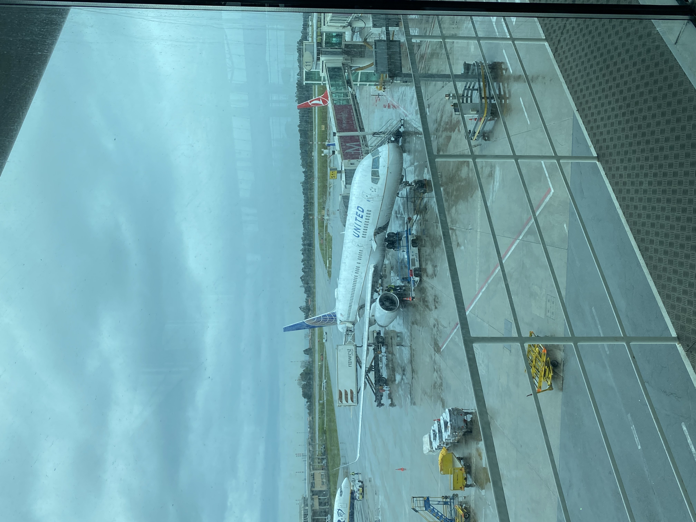

Os Meus Tempos Livres
Nos meus tempos livres, gosto de fazer várias atividades como ir ver jogos do Benfica,viajar e principalmente ouvir música.
Fotografias do que faço nos meus tempos livres


Nos meus tempos livres, gosto de fazer várias atividades como ir ver jogos do Benfica,viajar e principalmente ouvir música.